EngarceEngarce
El cristal se expande contra la greda y queda retenido por forma. La unión es mecánica, no una fusión.Glass expands against the clay and is held by form. The union is mechanical, not a fusion.
En joyería, engarzar es sujetar
una piedra sin fundirla.In jewelry, to set a stone is to hold it
without melting it.
El nombre no es metáfora: es la descripción técnica exacta. El cristal ancla por perforación, relieve o anillo. Donde la greda es lisa, se desprende.The name isn't a metaphor: it's the exact technical description. The glass anchors by perforation, relief or ring. Where the clay is smooth, it detaches.
Engarce no comenzó como catálogo, sino como una pregunta técnica: ¿pueden dos materiales de comportamiento térmico opuesto coexistir en un solo cuerpo sin que uno destruya al otro? La respuesta se construyó en dos etapas con respaldo Fondart. La primera estableció mediante probetas que la cohesión era posible; la segunda la llevó a producción controlada. Once piezas únicas son su resultado material.Engarce didn't begin as a catalog, but as a technical question: can two materials with opposite thermal behavior coexist in one body without destroying each other? The answer was built in two Fondart-backed stages. The first established through test pieces that cohesion was possible; the second took it to controlled production. Eleven unique pieces are its material result.
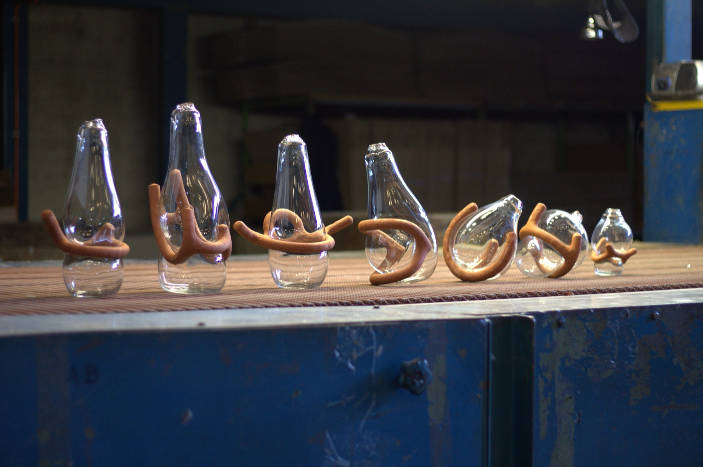
Once piezas, una misma tesisEleven pieces, one thesis
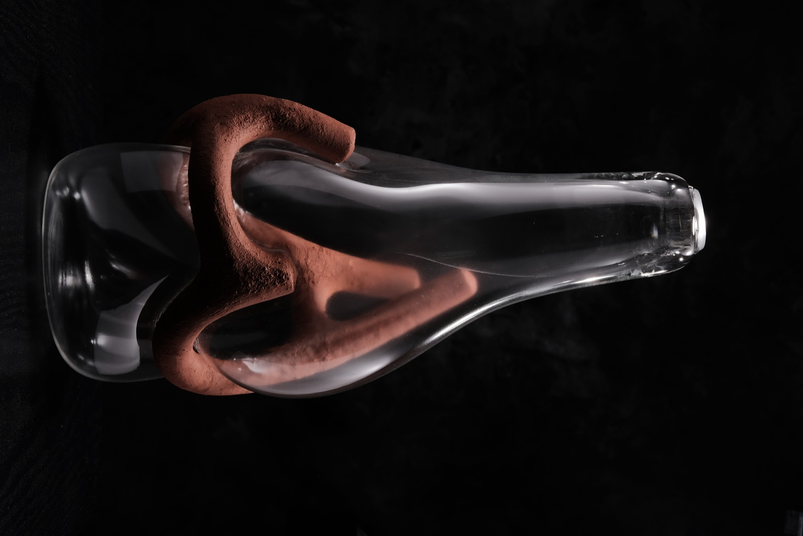
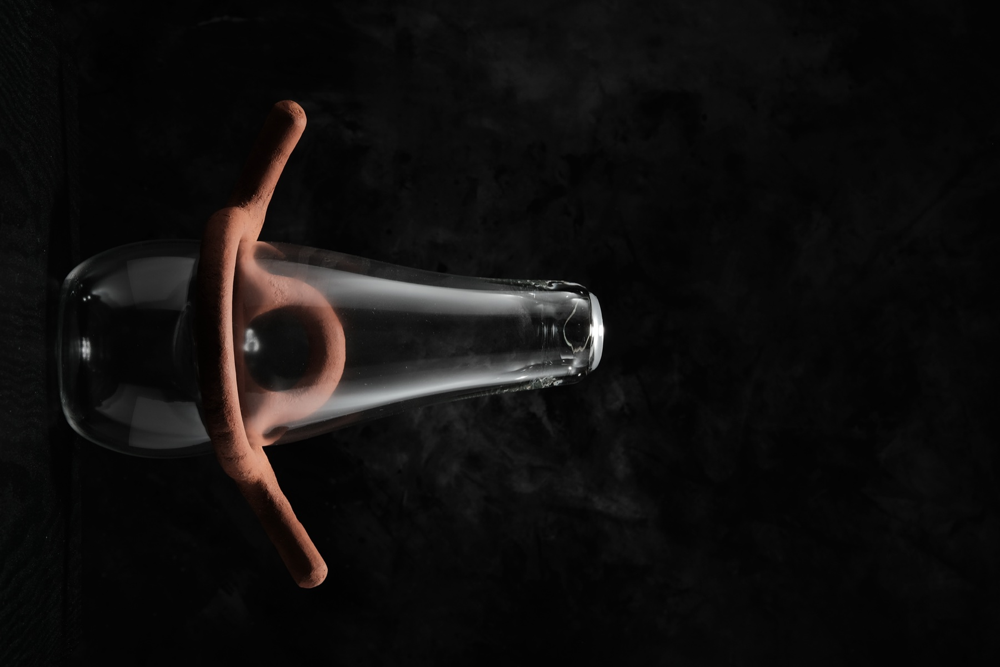
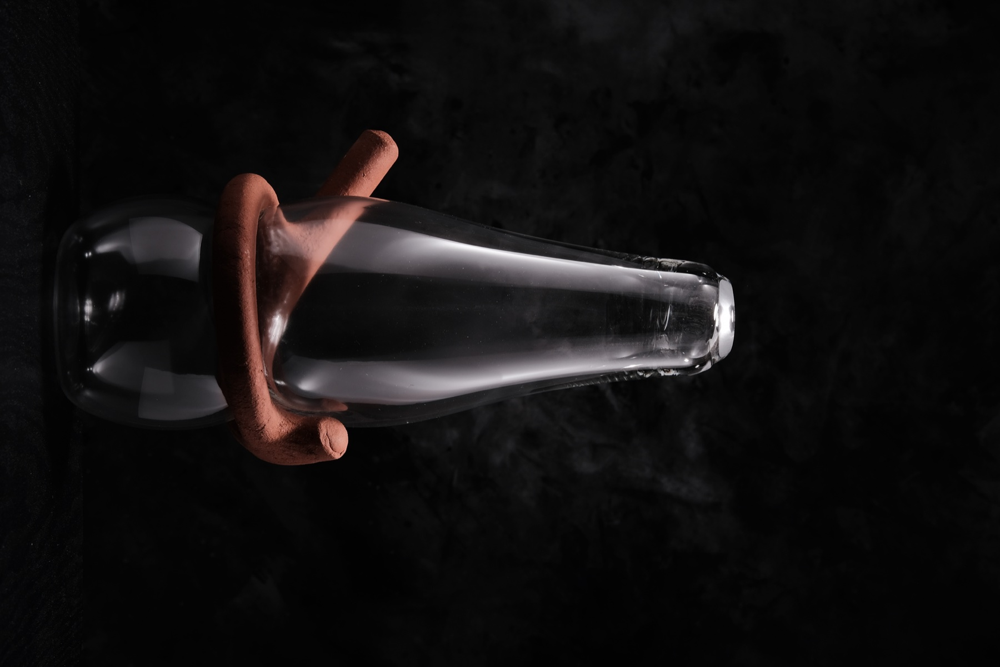
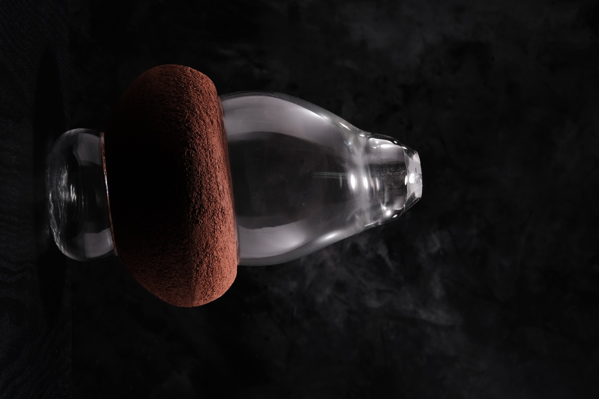
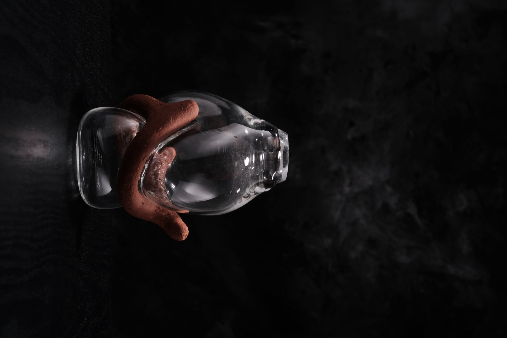
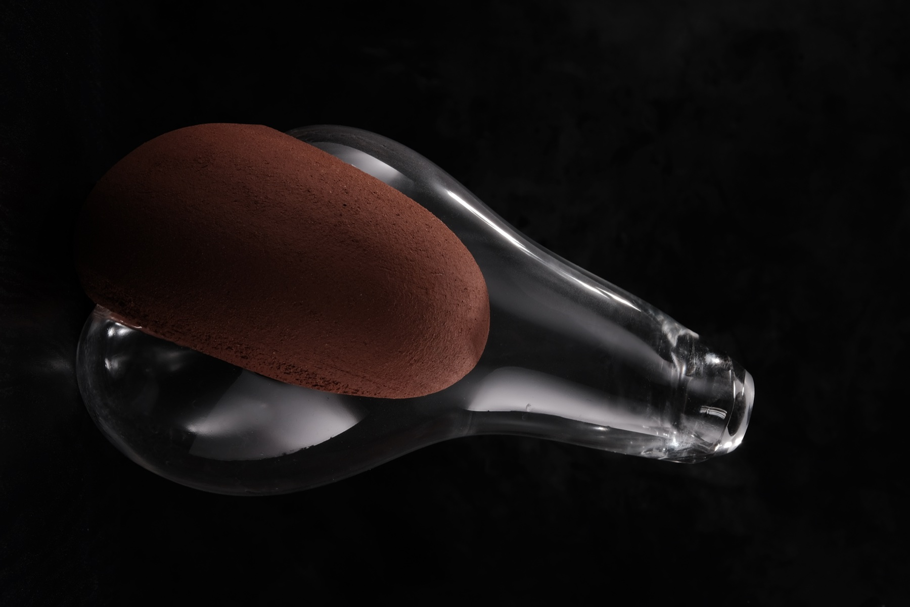
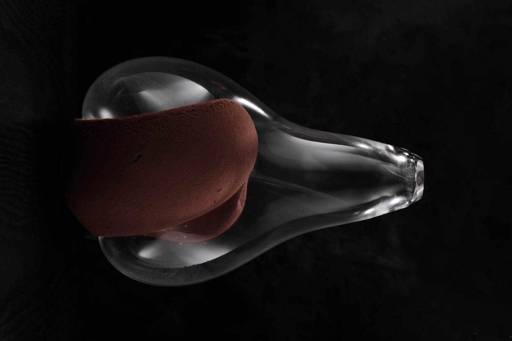
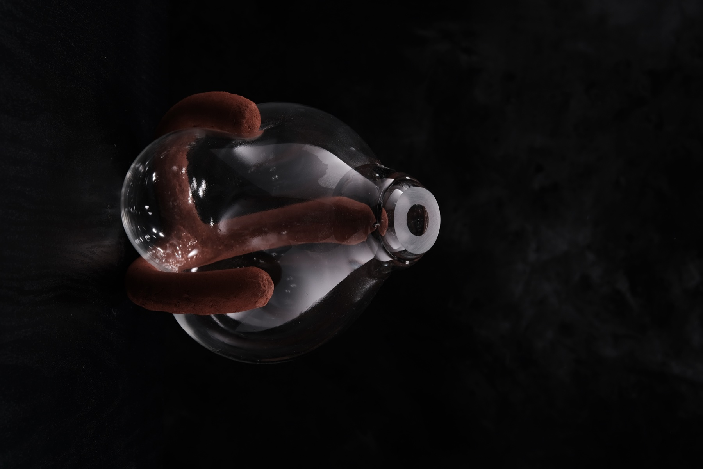
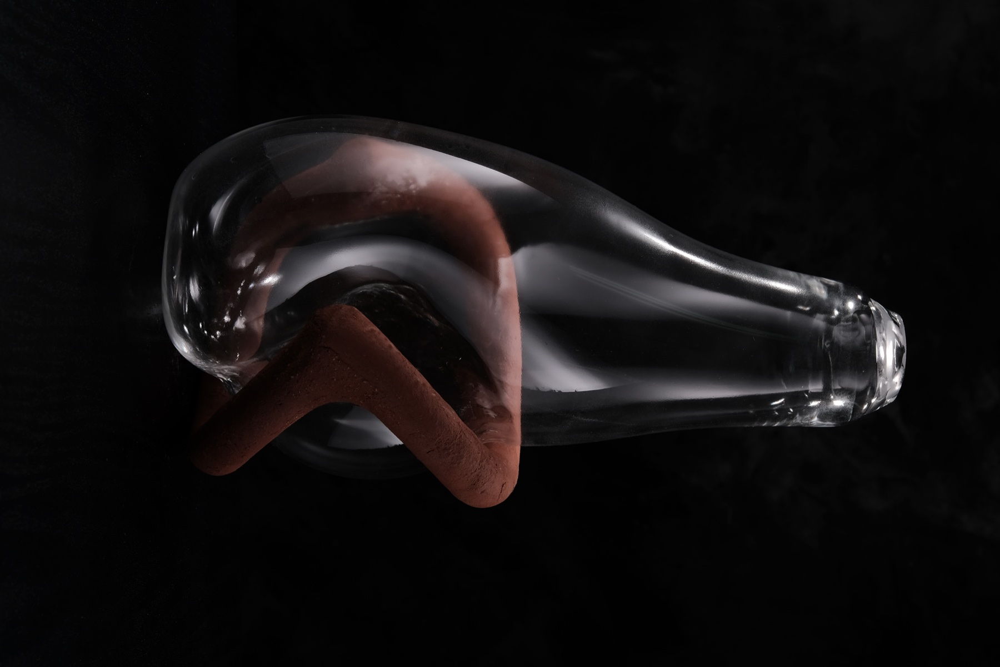
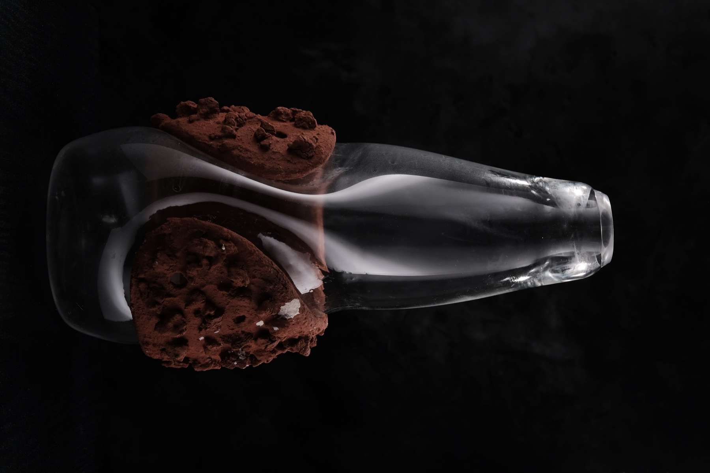
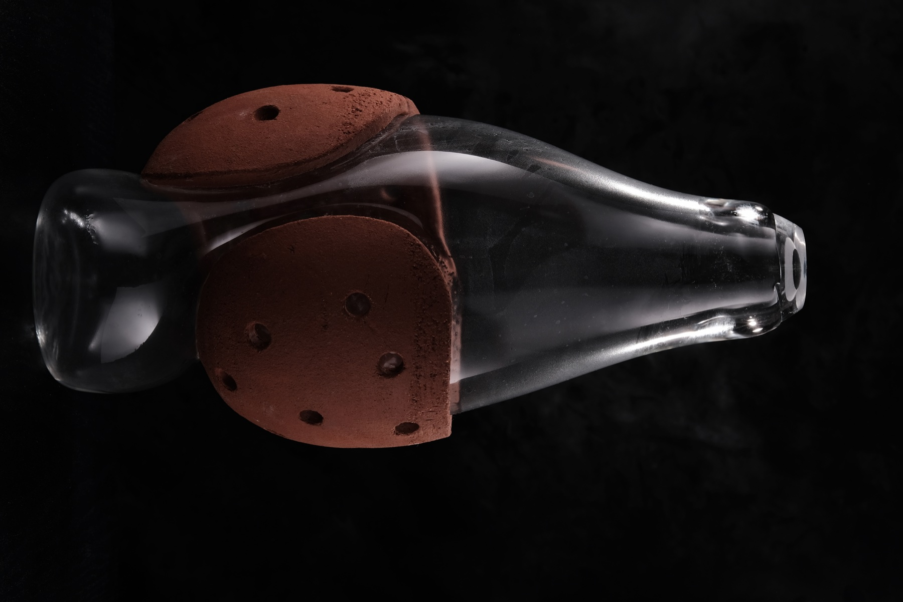
La serie que fijó
los parámetrosThe series that set
the parameters
Engarce demostró que la cohesión greda–vidrio es posible, controlable y producible. Once piezas, dos oficios articulados, una técnica documentada. Lo que en otras manos sería un hallazgo casual, aquí quedó fijado como método repetible.Engarce proved that clay–glass cohesion is possible, controllable and producible. Eleven pieces, two crafts articulated, one technique documented. What in other hands would be a casual finding was fixed here as a repeatable method.
También abrió la agenda que sigue: greda negra, cristal de color, matricería en otros materiales. Ese horizonte no es tarea pendiente, sino la señal de un trabajo que entiende cada colección como etapa, no como cierre.It also opened the agenda that continues: black clay, colored crystal, matrix-making in other materials. That horizon isn't unfinished business, but the sign of a practice that sees each collection as a stage, not a closing.
Sé dónde y cuándo el vidrio incandescente puede expandirse contra la arcilla sin quebrarla. Ese punto no está en un manual: lo aprendí probándolo pieza por pieza, durante años, hasta poder repetirlo.I know where and when incandescent glass can expand against the clay without cracking it. That point isn't in a manual: I learned it testing it piece by piece, over years, until I could repeat it.
Ficha técnicaTechnical sheet
- SerieSeries
- 11 piezas únicas · 2018–201911 unique pieces · 2018–2019
- MaterialidadMateriality
- Greda de Pomaire + cristal soplado a bocaPomaire clay + mouth-blown crystal
- UniónUnion
- Mecánica. Perforación, relieve o anillo. Sin adhesión química.Mechanical. Perforation, relief or ring. No chemical adhesion.
- DiseñoDesign
- Raúl Hernández TralmaRaúl Hernández Tralma
- GredaClay
- José Domingo PradoJosé Domingo Prado
- CristalGlass
- Raúl Lizama · CristalArtRaúl Lizama · CristalArt
- FotografíaPhotography
- Darío VargasDarío Vargas
- DimensionesDimensions
- Referenciales. La greda natural varía entre piezas.Referential. Natural clay varies between pieces.
- RespaldoBacking
- Fondart Nacional · Folio 503470National Fondart · Folio 503470
- ReconocimientoRecognition
- Individual GAM · Wanted Design NY · BID MadridSolo show GAM · Wanted Design NY · BID Madrid